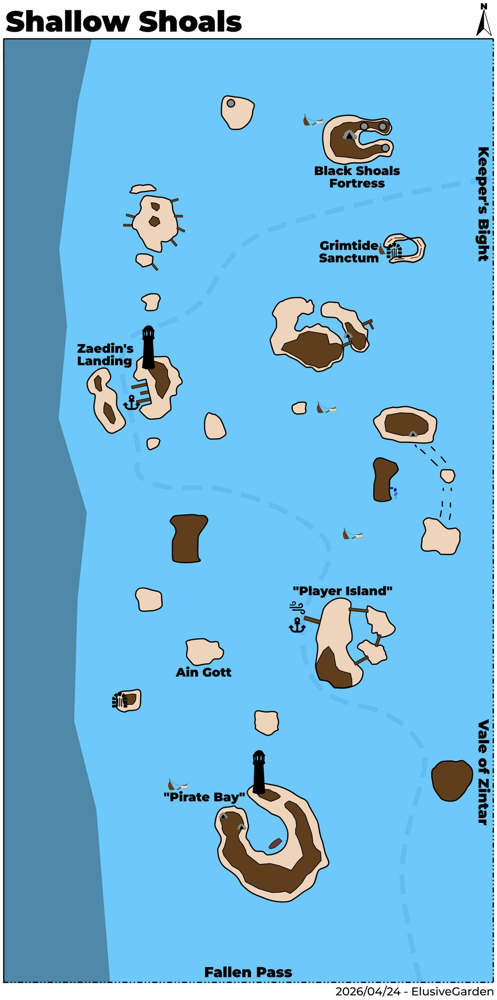
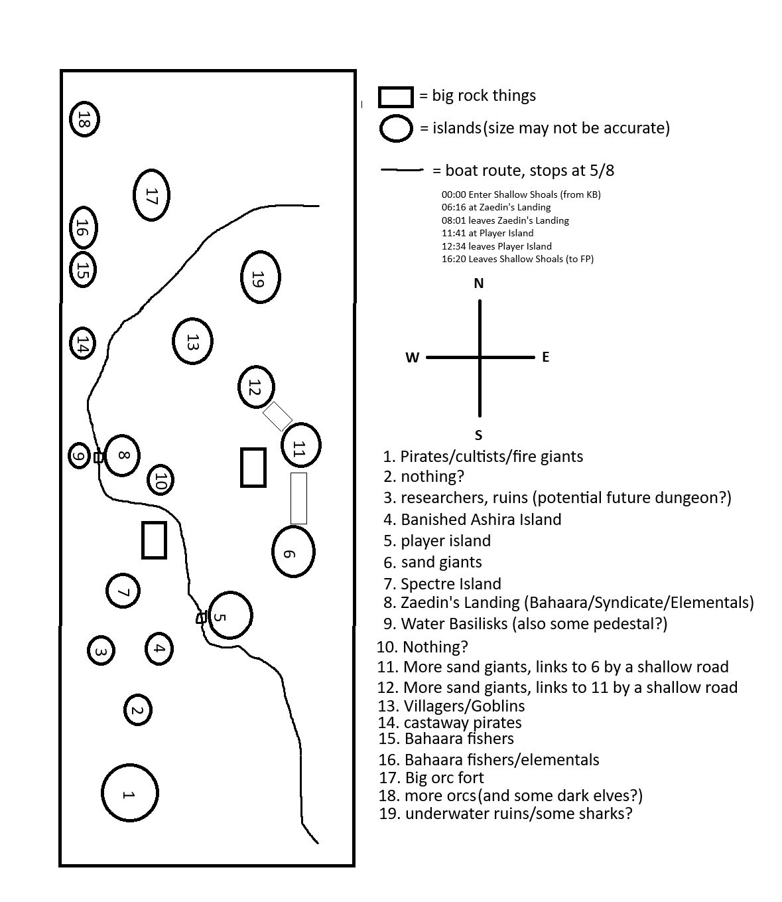
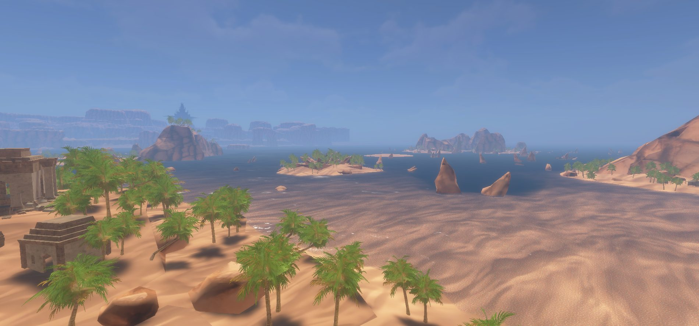

Shallow Shoals
This Archipelago located off the Western coast of Aêthoril straddles the regions of Szuur and Calafrey. Spanning from Keeper's Bight in the North to Fallen Pass in the South. To the the East is Vale of Zintar, to the West is the endless reaches of the Twilight Sea. Each island hosts its own different ecosystem comprised of various beasts, races, and factions.
Map



Named mobs
| Named | Lvl | Race / class | Where | Known loot (hover) |
|---|---|---|---|---|
| Enforcer Gritjaw | 30? | Human | Castaway Island | Crate of Stolen Spices |
| a water basilisk broodmother | ~36 | Basilisk | Basilisk Island | Basilisk Hide Leggings, Grotto Pauldrons, Basilisk Hide Vest |
| Mrvath Cinderhand | ~40 | Giant | Pirate Island | Sootgrit, Cinderstep Greaves, Wristguard of Wailing, Cinch of the Giant |
| Father Rau | 43-44 | Humanoid | Werejackal Island | Festival Facesmasher, Ashira Tail Charm, Eyes of the Predator, Purging Stick, Benu Dhai Prayer Beads |
| Witchguard Hellblade | ~45 | Orc | Black Shoals Fortress | Blade of the Witchguard, Hellblade Scout Gloves, Dexterous Wristguard |
| Herald of Muurtu | ~45 | Orc / Shaman | Black Shoals Fortress | Orcish Note, Verdant Legwraps, Bracer of the Herald |
| High-Sister Sarinius | ~45 | Human | Black Shoals Fortress | Faithpiercer, Girdle of Stern Mercy, Mask of Penance, Ring of Withering Thought, Sister's Whisper |
| High-Mother Haathala | ~45 | Human | Black Shoals Fortress | Mantle of Zeal |
| High-Priest of Muurtu | ~45 | Orc / Cleric | Black Shoals Fortress | Waistguard of Fervor, Ceremonial Greaves, Thoughtweaver's Wrap |
| Champion of Muurtu | ~45 | Orc / Paladin | Black Shoals Fortress | Muurtu Shield, Shadowy Chain Gloves, Muurtu Battleplate |
| Witchguard Primus | ~45 | Orc | Black Shoals Fortress | Witchguard Gauntlets |
| Witchguard Kruurgal | ~45 | Orc / Shadow Knight | Black Shoals Fortress | Witchlord's Cuirass, Ornate Sash, Tough Ligament Gloves, Head of Kruurgal the Witchlord |
| Captain Jonas Cossa | ~45 | Human / Unknown | Pirate Island | Saltlash, Masquerade Marchers |
| Hegumenia Mariam | ~45 | Human / Elementalist | Sister Island | Element-Tempered Shoulderplates, Sandals of the Elements |
| Sharkie | ~45 | Shark | Pirate Island | Mawtooth, Mawtooth War-Shoulders |
| Sylvaine | - | Human / Bard | Pirate Island | Fine Elven Drum, Fine Elven Lute |
| Gidum, the Dark Spirit | - | Undead | Werejackal Island | Torque of the False God, Vile Bastard Sword, Ashen Drape |
| Thrallmaker Zladen | - | Humanoid | Werejackal Island | Soul Shackle, Zladen's Shackleplates, Mantle of Umbrage, Mask of the Hunter |
| Tidal Lord Keelbiter | - | Goblin | - | |
| Captain Bilgesneak | - | Goblin / Rogue | Goblin Island | Coral Trident, Twilight Seashell Necklace, Barnacle Bracer, Bilgesnout Cape, Rivetcatch Hauberk |
| Grand Spiritbinder Murk | - | Goblin | - | |
| Saahil the Tide Reaver | - | Giant | - | |
| Barkeep Glior | - | Dwarf / merchant, quest | Pirate Island | |
| Crowne Duval | - | Human / quest | Pirate Island | |
| Madame Vespera | - | Human | Pirate Island | |
| Gallows Krane | - | Human | Pirate Island | |
| Ghost of Selam | - | Ghost | - | Ghostly Longbow |
Mobs & NPCs (camps by level)
Rows with a level are huntable camps; rows without are usually town NPCs or not yet documented.
| Name | Lvl | Race | Class | Where | Notes |
|---|---|---|---|---|---|
| a Spectre | 27 | Spectre | - | Spectre Island | |
| a Spectre Frightener | 28 | Spectre | - | Spectre Island | |
| a Goblin Bonecaster | 32 | Goblin | - | Goblin & Villager Island | |
| a Goblin Spiritcaster | 32 | Goblin | - | Goblin & Villager Island | |
| a Sea Goblin | 32 | Goblin | - | Goblin & Villager Island | |
| a Tidewalker Goblin | 33 | Goblin | - | Goblin & Villager Island | |
| a water basilisk | ~36-38 | Basilisk | - | Basilisk Island | |
| an obedient sniffer | ~38-39 | Wolf | - | Black Shoals Fortress | |
| A witchguard velite | ~39+ | Orc | - | Black Shoals Fortress | |
| a Landing deckhand | ~39-40 | Human | - | Zaedin's Landing | |
| a Landing privateer | ~39-40 | Human | - | Zaedin's Landing | |
| a Syndicate hauler | ~39-40 | Human | - | Zaedin's Landing | |
| a Syndicate liaison | ~39-40 | Human | - | Zaedin's Landing | |
| a Syndicate negotiator | ~39-40 | Human | Enchanter | Zaedin's Landing | |
| a Syndicate trader | ~39-40 | Human | - | Zaedin's Landing | |
| a Syndicate worker | ~39-40 | Human | - | Zaedin's Landing | |
| a witchguard Sacramir | ~39+ | Orc | Cleric | Black Shoals Fortress | |
| a witchguard cultor | ~39+ | Orc | Necromancer | Black Shoals Fortress | |
| a witchguard princeps | ~39+ | Orc | Fighter | Black Shoals Fortress | |
| a witchguard serverat | ~39+ | Orc | Fighter | Black Shoals Fortress | |
| an usurer | ~39-40 | Human | - | Zaedin's Landing | |
| a Landing enforcer | ~40-41 | Human | - | Zaedin's Landing | |
| a Landing guard | ~40-41 | Human | - | Zaedin's Landing | |
| a Landing watcher | ~40-41 | Human | - | Zaedin's Landing | |
| a lighterman | ~40-41 | Dwarf | - | Zaedin's Landing | |
| a witchguard signifer | ~41+ | Orc | Archer | Black Shoals Fortress | |
| Banker Bahdi | - | Human | - | Zaedin's Landing | Banker |
| Barkeep Zahra | - | Human | - | Zaedin's Landing | Merchant |
| Captain Harkan Saafir | - | Human | - | Zaedin's Landing | Quest Mob? |
| Fizzle Screwtape | - | Gnome | - | Zaedin's Landing | Quest Mob? |
| General Goods | - | Gnome | - | Zaedin's Landing | Merchant |
| Realtor Wafai | - | Human | - | Player's Island | sells housing |
| Samira Moonpalm | - | Halfling | - | Zaedin's Landing | Quest Mob? |
| Tariq the Revealer | - | Human | - | Zaedin's Landing | Quest Mob? |
| Used Weapons Dealer | - | Dwarf | - | Zaedin's Landing | Merchant |
| a Ba'Haara helmsman | - | Human | - | Zaedin's Landing | |
| a Ba'Haara navigator | - | Human | - | Zaedin's Landing | |
| a Claw villicus | - | Human | - | Pirate Island | |
| a Cossa pirate | - | Human | - | Pirate Island | |
| a Silver Ledger appraiser | - | ? | - | Zaedin's Landing | behind a locked gate |
| a contrabander | - | Gnome | - | Pirate Island | |
| a cooking apprentice | - | Halfling | - | Zaedin's Landing | |
| a craven cultist | - | Human | - | Pirate Island | |
| a fire giant wanderer | - | Giant | - | Pirate Island | |
| a nefarious cultist | - | Human | - | Pirate Island | |
| a raging elemental | - | Elemental | - | Zaedin's Landing | Fire or Air versions |
| a raging elemental | - | elemental | - | Zaedin's Landing | |
| a realtor | - | Human | - | Player's Island | sells housing keys |
| a roaming shark | - | Animal | - | waters near grimtide | |
| a scoundrel | - | Dwarf | - | Pirate Island | |
| a sea witch | - | Human | - | Pirate Island | |
| an exotic cook | - | Wood Elf | - | Zaedin's Landing | Merchant |
Quests
| Quest | Reward | Giver | Min lvl |
|---|---|---|---|
| Fizzle Screwtape's Critical Research | Sea Giant's Handkerchief | Fizzle Screwtape | 40+ |
| Dealing with the Blacktide Orcs | Vial of Snaring Poison | Captain Harkan Saafir | 40+ |
| Pelts for the Festival | Lunar Festival Wrappings | Brother Luka | 30+ |
| Ghost Haul | faction | Barkeep Glior | - |
| Crates for Zahara | coin, Cossa pirate faction | Barkeep Glior | - |
| Landing Loop Quest | coin, Landing Loop | Nadim Al-Saraf | 40+ |
Gear that drops here
| Slot | Item | Key stats (wiki) | How to get | Lvl | Classes |
|---|---|---|---|---|---|
| Primary, Secondary | Torch | Effect: Torch (Passive. Must Equip. Level: 1) | Quest: Pests at the Farm (Farmer Ammar, Night Harbor, min lvl 1) Vendor: A goods merchant — Night Harbor, Shallow Shoals; A greedy halfling — Night Harbor; A shifty elf — Evershade Weald Crafted: Survival (trivial X) Drop: A rotting skeleton (lvl 1) — Night Harbor, Noob Yard | 1 | All classes |
| Shoulders | Corroded Bronze Chain Shoulderguards | AC 8 | Drop: a Sangrel striker (lvl 18-22) — Keeper's Bight, - Drop: a poacher pathfinder (lvl 28-30) — Keeper's Bight, Poacher Camp, Bear Cave Drop: a Sangrel hunter (lvl 18-22) — Keeper's Bight, - Drop: a Blacktide brute (lvl 25) — Keeper's Bight, - | 6 | BRD CLR FTR INQ PAL RNG ROG SHD SHM |
| Primary, Secondary | Corroded Bronze Dagger | DMG 5 / DLY 24 | Drop: an ashira ain guard (lvl -) — Tel Ekir, - Drop: an ashira naturalist (lvl -) — Tel Ekir, - Drop: a skeletal acolyte (lvl 17) — Ancient Crypt, - Drop: a skeletal soldier (lvl 17) — Ancient Crypt, - | 6 | ARC BRD BST ELE ENC FTR NEC RNG ROG SHD SHM SPB WIZ |
| Secondary | Worn Ironbark Buckler | AC 10 | Drop: a Plagueborn knight (lvl ~42-44) — Fallen Pass, Western Beach Shrine, Elder Drake area Drop: a Plagueborn worshipper (lvl ~36-37) — Fallen Pass, Undead Citizens Drop: a Plagueborn veteran (lvl ~42-44) — Fallen Pass, Elder Drake area Drop: a dusty skeleton (lvl -) — Fallen Pass, - | 17 | BRD BST CLR DRU FTR INQ PAL RNG ROG SHD SHM SPB |
| Primary, Secondary | Rusty Steel Mace | DMG 13 / DLY 40 | Drop: a decaying drunk (lvl unconfirmed) — Glass Flats Drop: a fallen warden (lvl unconfirmed) — Glass Flats Drop: a herald (lvl unconfirmed) — Glass Flats Drop: an abyssal emissary (lvl ~48-50) — Glass Flats, - | 20 | BRD BST CLR DRU FTR INQ MNK PAL RNG ROG SHD SHM SPB |
| Primary, Secondary | Cracked Ironbark Staff | DMG 9 / DLY 33 | Drop: a poacher (lvl ~28-30) — Keeper's Bight, - Drop: a poacher bruiser (lvl 28-30) — Keeper's Bight, Poacher Camp, Bear Cave Drop: a poacher pathfinder (lvl 28-30) — Keeper's Bight, Poacher Camp, Bear Cave Named drop: Poacher Garrus (lvl >35) — Keeper's Bight, Poacher Camp | 27 | All classes |
| Feet | Rusty Iron Chain Boots | AC 10 | Drop: a Witchguard oracle (lvl unconfirmed) — Shallow Shoals Drop: a Witchguard veles (lvl unconfirmed) — Shallow Shoals Drop: a Witchguard sacramir (lvl ~39+) — Shallow Shoals, Black Shoals Fortress Drop: a treant (lvl 38) — Glinting Hollow, - | 27 | BRD CLR FTR INQ PAL RNG ROG SHD SHM |
| Shoulders | Rusty Iron Chain Shoulderguards | AC 13 | Drop: a cultist guard (lvl 44) — Glass Flats, - Drop: a cultist lookout (lvl 43) — Glass Flats, - Drop: a Plagueborn knight (lvl ~42-44) — Fallen Pass, Western Beach Shrine, Elder Drake area Drop: a Plagueborn watchman (lvl ~52-53) — Fallen Pass, Upper Saman | 27 | BRD CLR FTR INQ PAL RNG ROG SHD SHM |
| Waist | Rusty Iron Chain Waistguard | AC 4 | Drop: a Plagueborn citizen (lvl ~36-37) — Fallen Pass, Undead Citizens Drop: a wererat (lvl 31-33) — Fallen Pass, Smuggler Cave Named drop: Demeter Stollen (lvl 44) — Fallen Pass, West Beach Shrine Drop: a Plagueborn patrolman (lvl ~34-36) — Fallen Pass, Undead Citizens | 27 | BRD CLR FTR INQ PAL RNG ROG SHD SHM |
| Primary, Secondary | Rusty Iron Dagger | DMG 6 / DLY 23 | Drop: a corrupted enchantress (lvl unconfirmed) — Shallow Shoals Drop: a Witchguard venator (lvl unconfirmed) — Shallow Shoals Drop: a Witchguard veles (lvl unconfirmed) — Shallow Shoals Named drop: Champion of Muurtu (lvl ~45) — Shallow Shoals, Black Shoals Fortress | 27 | ARC BRD BST ELE ENC FTR INQ NEC RNG ROG SHD SHM SPB WIZ |
| Secondary | Rusty Iron Kite Shield | AC 13 | Drop: a Witchguard cultor (lvl ~39+) — Shallow Shoals, Black Shoals Fortress Drop: a Witchguard veles (lvl unconfirmed) — Shallow Shoals Drop: a Witchguard myrmidon (lvl unconfirmed) — Shallow Shoals Drop: Fizzle Screwtape (lvl -) — Shallow Shoals, Zaedin's Landing | 27 | BRD FTR INQ PAL RNG SHD |
| Primary | Rusty Iron Long Spear | DMG 13 / DLY 48 | Drop: a Witchguard cultor (lvl ~39+) — Shallow Shoals, Black Shoals Fortress Drop: a Witchguard shaman (lvl unconfirmed) — Shallow Shoals Drop: a Witchguard medicus (lvl unconfirmed) — Shallow Shoals Drop: a corrupted adept (lvl unconfirmed) — Shallow Shoals | 27 | ARC BRD BST FTR INQ RNG ROG SHD SHM |
| Primary, Secondary | Rusty Iron Longsword | DMG 10 / DLY 38 | Drop: a flourishing treant (lvl 38) — Glinting Hollow, - Drop: a goblin spiritbinder (lvl unconfirmed) — Shallow Shoals Drop: a Witchguard stalker (lvl unconfirmed) — Shallow Shoals Drop: a craven cultist (lvl -) — Shallow Shoals, Pirate Island | 27 | ARC BRD BST FTR INQ PAL RNG ROG SHD SPB WIZ |
| Primary | Rusty Iron Maul | DMG 18 / DLY 52 | Drop: a Witchguard princeps (lvl ~39+) — Shallow Shoals, Black Shoals Fortress Drop: a Witchguard defiler (lvl unconfirmed) — Shallow Shoals Drop: High Priest of Muurtu (lvl unconfirmed) — Shallow Shoals Drop: a Witchguard cultor (lvl ~39+) — Shallow Shoals, Black Shoals Fortress | 27 | BRD BST CLR DRU FTR INQ MNK PAL RNG ROG SHD SHM SPB |
| Feet | Rusty Iron Plate Boots | AC 12 | Drop: a cultist guard (lvl 44) — Glass Flats, - Drop: a Plagueborn priest (lvl ~42-44) — Fallen Pass, Elder Drake area Drop: a smuggler (lvl unconfirmed) — Fallen Pass Drop: a Plagueborn worshipper (lvl ~36-37) — Fallen Pass, Undead Citizens | 27 | CLR FTR INQ PAL SHD |
| Back | Rusty Iron Plate Cloak | AC 5 | Drop: a cultist lookout (lvl 43) — Glass Flats, - Drop: a crystallized skeleton (lvl ~35-40) — Glass Flats, - Drop: a highwayman prospect (lvl ~31+) — Glass Flats, - Drop: a tormented guardian (lvl unconfirmed) — Glass Flats | 27 | CLR FTR INQ PAL SHD |
| Neck | Rusty Iron Plate Collar | AC 4 | Drop: a headless vacationer (lvl 29-38) — Sunken Resort, - Drop: a Valtheris champion (lvl -) — Rothold, - Drop: a favored vanguard (lvl -) — Rothold, - Drop: a Valtheris devout (lvl -) — Rothold, - | 27 | CLR FTR INQ PAL SHD |
| Hands | Rusty Iron Plate Gauntlets | AC 13 | Drop: a weeping visitor (lvl 29-38) — Sunken Resort, - Drop: Tormented Soul (lvl -) — Fallen Watch, - Drop: a plague-sworn squire (lvl unconfirmed) — Fallen Watch Drop: a zombified rat (lvl 45-60) — Fallen Watch, - | 27 | CLR FTR INQ PAL SHD |
| Head | Rusty Iron Plate Helm | AC 15 | Drop: a Witchguard myrmidon (lvl unconfirmed) — Shallow Shoals Drop: a Witchguard veles (lvl unconfirmed) — Shallow Shoals Drop: a Witchguard serverat (lvl ~39+) — Shallow Shoals, Black Shoals Fortress Drop: a Valtheris elder (lvl -) — Rothold, - | 27 | CLR FTR INQ PAL SHD |
| Primary, Secondary | Rusty Iron Scimitar | DMG 9 / DLY 36 | Drop: a Witchguard cultor (lvl ~39+) — Shallow Shoals, Black Shoals Fortress Drop: a Witchguard defiler (lvl unconfirmed) — Shallow Shoals Drop: a Witchguard venator (lvl unconfirmed) — Shallow Shoals Drop: a Witchguard myrmidon (lvl unconfirmed) — Shallow Shoals | 27 | ARC BRD BST DRU FTR INQ PAL RNG ROG SHD SPB WIZ |
| Primary, Secondary | Rusty Iron Scythe | DMG 8 / DLY 28 | Drop: a Witchguard shaman (lvl unconfirmed) — Shallow Shoals Drop: a Witchguard medicus (lvl unconfirmed) — Shallow Shoals Drop: a Witchguard princeps (lvl ~39+) — Shallow Shoals, Black Shoals Fortress Drop: a Witchguard venator (lvl unconfirmed) — Shallow Shoals | 27 | BST DRU FTR INQ NEC RNG SHD SPB |
| Primary, Secondary | Rusty Iron Spear | DMG 9 / DLY 34 | Drop: a headless vacationer (lvl 29-38) — Sunken Resort, - Drop: a crystallized skeleton (lvl ~35-40) — Glass Flats, - Drop: a road deacon (lvl ~31+) — Glass Flats, - Drop: a Plagueborn knight (lvl ~42-44) — Fallen Pass, Western Beach Shrine, Elder Drake area | 27 | ARC BRD BST FTR INQ RNG ROG SHD SHM |
| Secondary | Rusty Iron Tower Shield | AC 16 | Drop: a Plagueborn worshipper (lvl ~36-37) — Fallen Pass, Undead Citizens Drop: a Plagueborn knight (lvl ~42-44) — Fallen Pass, Western Beach Shrine, Elder Drake area Drop: an assistant jailer (lvl unconfirmed) — Fallen Pass Drop: a Plagueborn watchman (lvl ~52-53) — Fallen Pass, Upper Saman | 27 | FTR INQ PAL SHD |
| Hands | Tattered Cotton Gloves | AC 4 | Drop: a poacher (lvl ~28-30) — Keeper's Bight, - Drop: a poacher bruiser (lvl 28-30) — Keeper's Bight, Poacher Camp, Bear Cave Drop: a poacher herbalist (lvl 28-30) — Keeper's Bight, Poacher Camp Named drop: Seamas Growt (lvl ~38+) — Fallen Pass, Pillars(wanders) | 27 | All classes |
| Neck | Tattered Cotton Gorget | AC 3 | Named drop: Poacher Garrus (lvl >35) — Keeper's Bight, Poacher Camp Drop: a poacher (lvl ~28-30) — Keeper's Bight, - Drop: a treant (lvl 38) — Glinting Hollow, - Drop: a cultist guard (lvl 44) — Glass Flats, - | 27 | All classes |
| Waist | Tattered Leather Belt | AC 3 | Drop: a cultist guard (lvl 44) — Glass Flats, - Drop: a Witchguard venator (lvl unconfirmed) — Shallow Shoals Drop: a Witchguard myrmidon (lvl unconfirmed) — Shallow Shoals Drop: a Witchguard sacramir (lvl ~39+) — Shallow Shoals, Black Shoals Fortress | 27 | ARC BRD BST CLR DRU FTR INQ MNK PAL RNG ROG SHD SHM SPB |
| Back | Tattered Leather Cloak | AC 3 | Drop: a cultist lookout (lvl 43) — Glass Flats, - Drop: a Witchguard shaman (lvl unconfirmed) — Shallow Shoals Drop: a Witchguard venator (lvl unconfirmed) — Shallow Shoals Drop: a Witchguard signifer (lvl ~41+) — Shallow Shoals, Black Shoals Fortress | 27 | ARC BRD BST CLR DRU FTR INQ MNK PAL RNG ROG SHD SHM SPB |
| Legs | Tattered Leather Leggings | AC 10 | Drop: a cultist guard (lvl 44) — Glass Flats, - Drop: a Plagueborn knight (lvl ~42-44) — Fallen Pass, Western Beach Shrine, Elder Drake area Drop: a Plagueborn veteran (lvl ~42-44) — Fallen Pass, Elder Drake area Drop: a Plagueborn citizen (lvl ~36-37) — Fallen Pass, Undead Citizens | 27 | ARC BRD BST CLR DRU FTR INQ MNK PAL RNG ROG SHD SHM SPB |
| Face | Tattered Leather Mask | AC 7 | Drop: a Plagueborn knight (lvl ~42-44) — Fallen Pass, Western Beach Shrine, Elder Drake area Drop: a Plagueborn faithful (lvl ~36-37) — Fallen Pass, Undead Citizens Drop: a Plagueborn citizen (lvl ~36-37) — Fallen Pass, Undead Citizens Drop: a smuggler (lvl unconfirmed) — Fallen Pass | 27 | ARC BRD BST CLR DRU FTR INQ MNK PAL RNG ROG SHD SHM SPB |
| Shoulders | Tattered Leather Shoulderpads | AC 11 | Named drop: Seamas Growt (lvl ~38+) — Fallen Pass, Pillars(wanders) Drop: a Plagueborn worshipper (lvl ~36-37) — Fallen Pass, Undead Citizens Drop: a Plagueborn veteran (lvl ~42-44) — Fallen Pass, Elder Drake area Drop: a Plagueborn citizen (lvl ~36-37) — Fallen Pass, Undead Citizens | 27 | ARC BRD BST CLR DRU FTR INQ MNK PAL RNG ROG SHD SHM SPB |
| Primary | Worn Ironbark Great Staff | DMG 16 / DLY 46 | Drop: a Witchguard cultor (lvl ~39+) — Shallow Shoals, Black Shoals Fortress Drop: a corrupted monk (lvl unconfirmed) — Shallow Shoals Drop: a Witchguard defiler (lvl unconfirmed) — Shallow Shoals Drop: a Benu Dhai brother (lvl unconfirmed) — Shallow Shoals | 27 | BST CLR DRU ELE ENC FTR MNK NEC PAL SHM SPB WIZ |
| Primary, Secondary | Rusty Iron Axe | DMG 11 / DLY 42 | Drop: a Witchguard defiler (lvl unconfirmed) — Shallow Shoals Drop: a Witchguard signifer (lvl ~41+) — Shallow Shoals, Black Shoals Fortress Drop: a Witchguard serverat (lvl ~39+) — Shallow Shoals, Black Shoals Fortress Drop: a Plagueborn veteran (lvl ~42-44) — Fallen Pass, Elder Drake area | 28 | BST FTR INQ PAL RNG SHD SPB |
| Primary | Rusty Iron Battle Axe | DMG 18 / DLY 54 | Drop: a Witchguard oracle (lvl unconfirmed) — Shallow Shoals Drop: a Witchguard defiler (lvl unconfirmed) — Shallow Shoals Drop: a corrupted monk (lvl unconfirmed) — Shallow Shoals Drop: a Witchguard stalker (lvl unconfirmed) — Shallow Shoals | 28 | BST FTR INQ PAL SHD |
| Back | Rusty Iron Chain Cloak | AC 4 | Drop: a Valtheris bloodlord (lvl unconfirmed) — Rothold Drop: a withered corpse (lvl -) — Rothold, - Drop: a poacher pathfinder (lvl 28-30) — Keeper's Bight, Poacher Camp, Bear Cave Named drop: Poacher Tolan (lvl >35) — Keeper's Bight, Poacher Camp | 28 | BRD CLR FTR INQ PAL RNG ROG SHD SHM |
| Hands | Rusty Iron Chain Gloves | AC 11 | Drop: a Plagueborn knight (lvl ~42-44) — Fallen Pass, Western Beach Shrine, Elder Drake area Drop: a Plagueborn citizen (lvl ~36-37) — Fallen Pass, Undead Citizens Drop: a Plagueborn worshipper (lvl ~36-37) — Fallen Pass, Undead Citizens Drop: a Plagueborn watchman (lvl ~52-53) — Fallen Pass, Upper Saman | 28 | BRD CLR FTR INQ PAL RNG ROG SHD SHM |
| Legs | Rusty Iron Chain Leggings | AC 17 | Drop: a Plagueborn knight (lvl ~42-44) — Fallen Pass, Western Beach Shrine, Elder Drake area Drop: a Plagueborn constable (lvl ~36-37) — Fallen Pass, Undead Citizens Drop: a Plagueborn citizen (lvl ~36-37) — Fallen Pass, Undead Citizens Drop: a Plagueborn watchman (lvl ~52-53) — Fallen Pass, Upper Saman | 28 | CLR FTR INQ PAL RNG ROG SHD SHM |
| Face | Rusty Iron Chain Mask | AC 4 | Drop: a Valtheris devout (lvl -) — Rothold, - Drop: a Valtheris priest (lvl -) — Rothold, - Drop: a Claw henchman (lvl ~35) — Night Harbor, Claw Compound Drop: a crystallized skeleton (lvl ~35-40) — Glass Flats, - | 28 | BRD CLR FTR INQ PAL RNG ROG SHD SHM |
| Chest | Rusty Iron Chain Tunic | AC 15 | Drop: a Witchguard myrmidon (lvl unconfirmed) — Shallow Shoals Drop: a corrupted priestess (lvl unconfirmed) — Shallow Shoals Drop: a Valtheris rake (lvl -) — Rothold, - Drop: a Valtheris night-watch (lvl -) — Rothold, - | 28 | BRD CLR FTR INQ PAL RNG ROG SHD SHM |
| Wrist | Rusty Iron Chain Wristguard | AC 9 | Drop: a Witchguard shaman (lvl unconfirmed) — Shallow Shoals Drop: a Witchguard serverat (lvl ~39+) — Shallow Shoals, Black Shoals Fortress Drop: a Witchguard veles (lvl unconfirmed) — Shallow Shoals Drop: a cultist lookout (lvl 43) — Glass Flats, - | 28 | BRD CLR FTR INQ PAL RNG ROG SHD SHM |
| Primary | Rusty Iron Great Scythe | DMG 16 / DLY 46 | Drop: a Plagueborn veteran (lvl ~42-44) — Fallen Pass, Elder Drake area Drop: a Plagueborn knight (lvl ~42-44) — Fallen Pass, Western Beach Shrine, Elder Drake area Drop: a smuggler (lvl unconfirmed) — Fallen Pass Drop: a Plagueborn patrolman (lvl ~34-36) — Fallen Pass, Undead Citizens | 28 | BST DRU FTR INQ NEC RNG SHD SPB |
| Primary | Rusty Iron Greatsword | DMG 13 / DLY 50 | Drop: a Witchguard stalker (lvl unconfirmed) — Shallow Shoals Drop: a Witchguard medicus (lvl unconfirmed) — Shallow Shoals Drop: a Witchguard signifer (lvl ~41+) — Shallow Shoals, Black Shoals Fortress Drop: a Witchguard cultor (lvl ~39+) — Shallow Shoals, Black Shoals Fortress | 28 | BRD BST FTR INQ PAL RNG SHD SPB |
| Primary, Secondary | Rusty Iron Mace | DMG 11 / DLY 40 | Drop: a Witchguard sacramir (lvl ~39+) — Shallow Shoals, Black Shoals Fortress Drop: a Witchguard princeps (lvl ~39+) — Shallow Shoals, Black Shoals Fortress Drop: a Witchguard myrmidon (lvl unconfirmed) — Shallow Shoals Drop: a Witchguard serverat (lvl ~39+) — Shallow Shoals, Black Shoals Fortress | 28 | BRD BST CLR DRU FTR INQ MNK PAL RNG ROG SHD SHM SPB |
| Shirt | Rusty Iron Plate Arming Doublet | no stats listed on wiki | Named drop: Poacher Tolan (lvl >35) — Keeper's Bight, Poacher Camp Drop: a poacher bruiser (lvl 28-30) — Keeper's Bight, Poacher Camp, Bear Cave Drop: a poacher (lvl ~28-30) — Keeper's Bight, - Drop: a Witchguard princeps (lvl ~39+) — Shallow Shoals, Black Shoals Fortress | 28 | CLR FTR INQ PAL SHD |
| Wrist | Rusty Iron Plate Bracer | AC 11 | Drop: a cultist lookout (lvl 43) — Glass Flats, - Drop: a cultist guard (lvl 44) — Glass Flats, - Drop: a grizzled raider (lvl ~31+) — Glass Flats, - Drop: a Plagueborn priest (lvl ~42-44) — Fallen Pass, Elder Drake area | 28 | CLR FTR INQ PAL SHD |
| Chest | Rusty Iron Plate Breastplate | AC 20 | Drop: a Witchguard myrmidon (lvl unconfirmed) — Shallow Shoals Drop: a Witchguard sacramir (lvl ~39+) — Shallow Shoals, Black Shoals Fortress Drop: a Witchguard princeps (lvl ~39+) — Shallow Shoals, Black Shoals Fortress Drop: a Witchguard veles (lvl unconfirmed) — Shallow Shoals | 28 | CLR FTR INQ PAL SHD |
| Waist | Rusty Iron Plate Girdle | AC 5 | Drop: a wide-eyed reveler (lvl 29-38) — Sunken Resort, - Drop: a bloodbound defender (lvl -) — Rothold, - Drop: a Valtheris priest (lvl -) — Rothold, - Drop: a Valtheris devout (lvl -) — Rothold, - | 28 | CLR FTR INQ PAL SHD |
| Legs | Rusty Iron Plate Greaves | AC 17 | Drop: a Plagueborn knight (lvl ~42-44) — Fallen Pass, Western Beach Shrine, Elder Drake area Drop: a Plagueborn watchman (lvl ~52-53) — Fallen Pass, Upper Saman Drop: a Valtheris bloodlord (lvl unconfirmed) — Rothold Drop: a Valtheris devout (lvl -) — Rothold, - | 28 | CLR FTR INQ PAL SHD |
| Shoulders | Rusty Iron Plate Pauldrons | AC 16 | Drop: a treant (lvl 38) — Glinting Hollow, - Drop: a weeping visitor (lvl 29-38) — Sunken Resort, - Drop: a withered corpse (lvl -) — Rothold, - Drop: a discarded corpse (lvl -) — Rothold, - | 28 | CLR FTR INQ PAL SHD |
| Face | Rusty Iron Plate Visor | AC 5 | Drop: a sand giant raider (lvl ~45) — Vale of Zintar, Fishing Camp Drop: a Plagueborn citizen (lvl ~36-37) — Fallen Pass, Undead Citizens Drop: a Plagueborn knight (lvl ~42-44) — Fallen Pass, Western Beach Shrine, Elder Drake area Drop: a Plagueborn patrolman (lvl ~34-36) — Fallen Pass, Undead Citizens | 28 | CLR FTR INQ PAL SHD |
| Primary, Secondary | Rusty Iron Shortsword | DMG 7 / DLY 26 | Drop: a corrupted monk (lvl unconfirmed) — Shallow Shoals Drop: a Witchguard medicus (lvl unconfirmed) — Shallow Shoals Drop: a Witchguard veles (lvl unconfirmed) — Shallow Shoals Drop: a Witchguard serverat (lvl ~39+) — Shallow Shoals, Black Shoals Fortress | 28 | ARC BRD BST FTR INQ PAL RNG ROG SHD SPB WIZ |
| Primary, Secondary | Rusty Iron Trident | DMG 9 / DLY 32 | Drop: a Witchguard princeps (lvl ~39+) — Shallow Shoals, Black Shoals Fortress Drop: a Witchguard defiler (lvl unconfirmed) — Shallow Shoals Drop: a Witchguard myrmidon (lvl unconfirmed) — Shallow Shoals Drop: a corrupted monk (lvl unconfirmed) — Shallow Shoals | 28 | ARC BRD BST FTR INQ RNG ROG SHD SHM |
| Primary | Rusty Iron War Lance | DMG 16 / DLY 48 | Drop: a Witchguard venator (lvl unconfirmed) — Shallow Shoals Drop: a Witchguard cultor (lvl ~39+) — Shallow Shoals, Black Shoals Fortress Drop: a Witchguard sacramir (lvl ~39+) — Shallow Shoals, Black Shoals Fortress Named drop: Champion of Muurtu (lvl ~45) — Shallow Shoals, Black Shoals Fortress | 28 | FTR INQ PAL SHD |
| Primary, Secondary | Rusty Iron Warhammer | DMG 8 / DLY 30 | Drop: a Witchguard signifer (lvl ~41+) — Shallow Shoals, Black Shoals Fortress Drop: a Witchguard cultor (lvl ~39+) — Shallow Shoals, Black Shoals Fortress Drop: a Witchguard sacramir (lvl ~39+) — Shallow Shoals, Black Shoals Fortress Drop: a Witchguard veles (lvl unconfirmed) — Shallow Shoals | 28 | BRD BST CLR DRU FTR INQ MNK PAL RNG ROG SHD SHM SPB |
| Waist | Tattered Cotton Belt | AC 2 | Drop: a poacher (lvl ~28-30) — Keeper's Bight, - Drop: a poacher pathfinder (lvl 28-30) — Keeper's Bight, Poacher Camp, Bear Cave Drop: a poacher bruiser (lvl 28-30) — Keeper's Bight, Poacher Camp, Bear Cave Drop: a Plagueborn citizen (lvl ~36-37) — Fallen Pass, Undead Citizens | 28 | All classes |
| Feet | Tattered Cotton Boots | AC 4 | Drop: a Witchguard cultor (lvl ~39+) — Shallow Shoals, Black Shoals Fortress Drop: a Witchguard signifer (lvl ~41+) — Shallow Shoals, Black Shoals Fortress Drop: a corrupted enchantress (lvl unconfirmed) — Shallow Shoals Drop: a corrupted adept (lvl unconfirmed) — Shallow Shoals | 28 | All classes |
| Wrist | Tattered Cotton Bracer | AC 3 | Drop: a Plagueborn veteran (lvl ~42-44) — Fallen Pass, Elder Drake area Drop: a Plagueborn citizen (lvl ~36-37) — Fallen Pass, Undead Citizens Drop: a smuggler (lvl unconfirmed) — Fallen Pass Named drop: Qassem Brolt (lvl 32) — Fallen Pass, Smuggler Caves | 28 | All classes |
| Head | Tattered Cotton Cap | AC 5 | Drop: a poacher (lvl ~28-30) — Keeper's Bight, - Drop: a poacher bruiser (lvl 28-30) — Keeper's Bight, Poacher Camp, Bear Cave Drop: a cultist guard (lvl 44) — Glass Flats, - Drop: a cultist lookout (lvl 43) — Glass Flats, - | 28 | All classes |
| Back | Tattered Cotton Cape | AC 2 | Drop: a Witchguard venator (lvl unconfirmed) — Shallow Shoals Drop: a corrupted priestess (lvl unconfirmed) — Shallow Shoals Drop: a Witchguard defiler (lvl unconfirmed) — Shallow Shoals Drop: a Witchguard veles (lvl unconfirmed) — Shallow Shoals | 28 | All classes |
| Shoulders | Tattered Cotton Mantle | AC 6 | Drop: a Witchguard cultor (lvl ~39+) — Shallow Shoals, Black Shoals Fortress Drop: a corrupted adept (lvl unconfirmed) — Shallow Shoals Drop: a Witchguard veles (lvl unconfirmed) — Shallow Shoals Drop: a Witchguard myrmidon (lvl unconfirmed) — Shallow Shoals | 28 | All classes |
| Legs | Tattered Cotton Pantaloons | AC 7 | Drop: a poacher (lvl ~28-30) — Keeper's Bight, - Drop: a poacher bruiser (lvl 28-30) — Keeper's Bight, Poacher Camp, Bear Cave Drop: a poacher pathfinder (lvl 28-30) — Keeper's Bight, Poacher Camp, Bear Cave Drop: a Witchguard cultor (lvl ~39+) — Shallow Shoals, Black Shoals Fortress | 28 | All classes |
| Chest | Tattered Cotton Robe | AC 7 | Drop: a poacher (lvl ~28-30) — Keeper's Bight, - Drop: a poacher bruiser (lvl 28-30) — Keeper's Bight, Poacher Camp, Bear Cave Drop: a cultist guard (lvl 44) — Glass Flats, - Drop: a bone fiend (lvl -) — Glass Flats, - | 28 | ELE ENC NEC WIZ |
| Shirt | Tattered Cotton Shirt | no stats listed on wiki | Drop: a Witchguard defiler (lvl unconfirmed) — Shallow Shoals Drop: a Witchguard medicus (lvl unconfirmed) — Shallow Shoals Drop: a Witchguard veles (lvl unconfirmed) — Shallow Shoals Drop: a Witchguard serverat (lvl ~39+) — Shallow Shoals, Black Shoals Fortress | 28 | All classes |
| Chest | Tattered Cotton Tunic | AC 7 | Drop: a Witchguard cultor (lvl ~39+) — Shallow Shoals, Black Shoals Fortress Drop: a Witchguard princeps (lvl ~39+) — Shallow Shoals, Black Shoals Fortress Drop: a Witchguard defiler (lvl unconfirmed) — Shallow Shoals Drop: a Witchguard shaman (lvl unconfirmed) — Shallow Shoals | 28 | All classes |
| Face | Tattered Cotton Veil | AC 2 | Drop: a Plagueborn knight (lvl ~42-44) — Fallen Pass, Western Beach Shrine, Elder Drake area Drop: a Plagueborn citizen (lvl ~36-37) — Fallen Pass, Undead Citizens Drop: a Plagueborn worshipper (lvl ~36-37) — Fallen Pass, Undead Citizens Drop: a Plagueborn scholar (lvl ~36-37) — Fallen Pass, Undead Citizens | 28 | All classes |
| Feet | Tattered Leather Boots | AC 6 | Drop: a poacher (lvl ~28-30) — Keeper's Bight, - Drop: a poacher bruiser (lvl 28-30) — Keeper's Bight, Poacher Camp, Bear Cave Drop: a poacher pathfinder (lvl 28-30) — Keeper's Bight, Poacher Camp, Bear Cave Drop: a Plagueborn veteran (lvl ~42-44) — Fallen Pass, Elder Drake area | 28 | ARC BRD BST CLR DRU FTR INQ MNK PAL RNG ROG SHD SHM SPB |
| Wrist | Tattered Leather Bracer | AC 7 | Drop: a flourishing treant (lvl 38) — Glinting Hollow, - Drop: a laughing gobling (lvl ~42) — Glinting Hollow, 2nd Floor Drop: a cultist lookout (lvl 43) — Glass Flats, - Drop: a bone fiend (lvl -) — Glass Flats, - | 28 | ARC BRD BST CLR DRU FTR INQ MNK PAL RNG ROG SHD SHM SPB |
| Head | Tattered Leather Cap | AC 9 | Drop: a poacher (lvl ~28-30) — Keeper's Bight, - Drop: a poacher bruiser (lvl 28-30) — Keeper's Bight, Poacher Camp, Bear Cave Drop: a poacher pathfinder (lvl 28-30) — Keeper's Bight, Poacher Camp, Bear Cave Drop: a cultist guard (lvl 44) — Glass Flats, - | 28 | ARC BRD BST CLR DRU FTR INQ MNK PAL RNG ROG SHD SHM SPB |
| Hands | Tattered Leather Gloves | AC 8 | Drop: a Plagueborn veteran (lvl ~42-44) — Fallen Pass, Elder Drake area Drop: a Plagueborn knight (lvl ~42-44) — Fallen Pass, Western Beach Shrine, Elder Drake area Drop: an assistant jailer (lvl unconfirmed) — Fallen Pass Drop: a Plagueborn worshipper (lvl ~36-37) — Fallen Pass, Undead Citizens | 28 | ARC BRD BST CLR DRU FTR INQ MNK PAL RNG ROG SHD SHM SPB |
| Neck | Tattered Leather Gorget | AC 4 | Drop: a pale jailer (lvl 40) — Night Harbor, Pale Guard Tower Drop: a Claw henchman (lvl ~35) — Night Harbor, Claw Compound Drop: a sand giant raider (lvl ~45) — Vale of Zintar, Fishing Camp Drop: a Dustrend legionary (lvl ~29-30) — Vale of Zintar, - | 28 | ARC BRD BST CLR DRU FTR INQ MNK PAL RNG ROG SHD SHM SPB |
| Chest | Tattered Leather Tunic | AC 11 | Drop: a Plagueborn veteran (lvl ~42-44) — Fallen Pass, Elder Drake area Named drop: Kallen Oison (lvl 37) — Fallen Pass Drop: a Plagueborn citizen (lvl ~36-37) — Fallen Pass, Undead Citizens Drop: a smuggler (lvl unconfirmed) — Fallen Pass | 28 | ARC BRD BST CLR DRU FTR INQ MNK PAL RNG ROG SHD SHM SPB |
| Shirt | Tattered Leather Vest | no stats listed on wiki | Drop: a Plagueborn priest (lvl ~42-44) — Fallen Pass, Elder Drake area Named drop: Kowmeh Lalen (lvl 40) — Fallen Pass, Plagueborn Citizens, NE Corner Drop: a smuggler (lvl unconfirmed) — Fallen Pass Drop: an assistant jailer (lvl unconfirmed) — Fallen Pass | 28 | ARC BRD BST CLR DRU FTR INQ MNK PAL RNG ROG SHD SHM SPB |
| Range | Worn Ironbark Bow | DMG 13 / DLY 40 | Drop: a cultist lookout (lvl 43) — Glass Flats, - Drop: a crystallized skeleton (lvl ~35-40) — Glass Flats, - Drop: a treant (lvl 38) — Glinting Hollow, - Drop: a flourishing treant (lvl 38) — Glinting Hollow, - | 28 | ARC BST FTR PAL RNG ROG SHD SPB |
| Imperfect Malachite | no stats listed on wiki | Drop: a Claw blackguard (lvl ~35) — Night Harbor, Claw Compound Drop: a corrupted adept (lvl unconfirmed) — Shallow Shoals | 35 | ELE | |
| Legs | Basilisk Hide Leggings | AC 21, STR +2, STA +4, HP +15 | Named drop: a water basilisk broodmother (lvl ~36) — Shallow Shoals, Basilisk Island | 36 | ARC BRD BST DRU MNK RNG ROG SHM SPB |
| Ear | Basilisk Scale Circlet | STA +1, INT +4, Mana +5, SV Magic +3 | Named drop: a water basilisk broodmother (lvl ~36) — Shallow Shoals, Basilisk Island | 36 | ELE ENC INQ NEC SHD SPB WIZ |
| Ear | Blacktide Earring | AC 1 | Quest: Dealing with the Blacktide Orcs (Captain Harkan Saafir, Shallow Shoals, min lvl 40) Drop: a Witchguard cultor (lvl ~39+) — Shallow Shoals, Black Shoals Fortress Drop: a Witchguard signifer (lvl ~41+) — Shallow Shoals, Black Shoals Fortress Drop: a Witchguard venator (lvl unconfirmed) — Shallow Shoals | 39 | ARC BST FTR INQ MNK PAL RNG SHD SPB |
| Cinch of the Giant | AC 8, STR +1, STA +3, INT +5, Mana +20, SV Corruption +3 | Named drop: Mrvath Cinderhand (lvl ~40) — Shallow Shoals, Pirate Island | 40 | All classes | |
| Legs | Cinderstep Greaves | AC 30, WIS +5, HP +25 | Named drop: Mrvath Cinderhand (lvl ~40) — Shallow Shoals, Pirate Island | 40 | BRD CLR FTR INQ PAL RNG ROG SHD SHM |
| Primary | Sootgrit | DMG 15 / DLY 35, STR +6, HP +10, SV Disease +2 | Named drop: Mrvath Cinderhand (lvl ~40) — Shallow Shoals, Pirate Island | 40 | ARC BRD BST ELE ENC FTR INQ NEC RNG ROG SHD SHM SPB WIZ |
| Wrist | Wristguard of Wailing | AC 9, STR +3, STA +1, INT +5, Mana +5 | Named drop: Mrvath Cinderhand (lvl ~40) — Shallow Shoals, Pirate Island | 40 | All classes |
| Primary, Secondary | Rusty Steel Longsword | DMG 9 / DLY 38 | Drop: a skeletal archer (lvl unconfirmed) — Glass Flats Drop: a haunted traveler (lvl unconfirmed) — Glass Flats Drop: an immolated grovekeeper (lvl unconfirmed) — Glass Flats Drop: a skeletal footman (lvl -) — Glass Flats, - | 42 | ARC BRD BST FTR INQ PAL RNG ROG SHD SPB WIZ |
| Feet | Rusty Steel Plate Boots | AC 17 | Drop: a Plagueborn watchman (lvl ~52-53) — Fallen Pass, Upper Saman Drop: a Plagueborn myrmidon (lvl ~54-55) — Fallen Pass, Upper Saman Drop: a Plagueborn stablehand (lvl ~52-53) — Fallen Pass, Upper Saman Drop: a Plagueborn nobleman (lvl ~52-53) — Fallen Pass, Upper Saman | 42 | CLR FTR INQ PAL SHD |
| Wrist | Rusty Steel Plate Bracer | AC 15 | Drop: a Witchguard myrmidon (lvl unconfirmed) — Shallow Shoals Drop: a Plagueborn watchman (lvl ~52-53) — Fallen Pass, Upper Saman Drop: a Plagueborn myrmidon (lvl ~54-55) — Fallen Pass, Upper Saman Drop: a Plagueborn stablehand (lvl ~52-53) — Fallen Pass, Upper Saman | 42 | CLR FTR INQ PAL SHD |
| Shoulders | Rusty Steel Plate Pauldrons | AC 22 | Drop: a Witchguard myrmidon (lvl unconfirmed) — Shallow Shoals Drop: a Grimtide moondrowner (lvl 47-49) — Grimtide Sanctum, - Drop: a cult initiate (lvl 45) — Glass Flats, - Drop: a skeletal footman (lvl -) — Glass Flats, - | 42 | CLR FTR INQ PAL SHD |
| Face | Rusty Steel Plate Visor | AC 6 | Drop: a tormented guardian (lvl unconfirmed) — Glass Flats Drop: an ashen servant (lvl unconfirmed) — Glass Flats Drop: a wyrmseer vizier (lvl ~48-50) — Glass Flats, - Drop: an abyssal emissary (lvl ~48-50) — Glass Flats, - | 42 | CLR FTR INQ PAL SHD |
| Primary, Secondary | Rusty Steel Spear | DMG 11 / DLY 34 | Drop: a Witchguard corruptor (lvl unconfirmed) — Shallow Shoals Drop: a Plagueborn maiden (lvl ~52-53) — Fallen Pass, Upper Saman Drop: a Plagueborn sentinel (lvl unconfirmed) — Fallen Pass Drop: a Plagueborn stablehand (lvl ~52-53) — Fallen Pass, Upper Saman | 42 | ARC BRD BST FTR INQ RNG ROG SHD SHM |
| Secondary | Rusty Steel Tower Shield | AC 22 | Drop: a sand giant raider (lvl ~45) — Vale of Zintar, Fishing Camp Drop: a sand giant geomancer (lvl ~54-57) — Vale of Zintar, Giant City Drop: a sand giant bandit (lvl ~45) — Vale of Zintar, Giant City, Fishing Camp Drop: a sand giant suncaller (lvl ~54-57) — Vale of Zintar, Giant City | 42 | FTR INQ PAL SHD |
| Primary | Rusty Steel War Lance | DMG 20 / DLY 48 | Drop: a Plagueborn watchman (lvl ~52-53) — Fallen Pass, Upper Saman Drop: a Plagueborn noblewoman (lvl unconfirmed) — Fallen Pass Named drop: Felix Rathmere (lvl 45) — Fallen Pass, - Drop: a Plagueborn maid (lvl ~52-53) — Fallen Pass, Upper Saman | 42 | FTR INQ PAL SHD |
| Primary, Secondary | Rusty Steel Warhammer | DMG 10 / DLY 30 | Drop: a Witchguard myrmidon (lvl unconfirmed) — Shallow Shoals Drop: a skeletal footman (lvl -) — Glass Flats, - Drop: a cult initiate (lvl 45) — Glass Flats, - Drop: an abyssal emissary (lvl ~48-50) — Glass Flats, - | 42 | BRD BST CLR DRU FTR INQ MNK PAL RNG ROG SHD SHM SPB |
| Head | Tattered Linen Cap | AC 8 | Drop: a Witchguard corruptor (lvl unconfirmed) — Shallow Shoals Drop: Witchlord Kruurgal (lvl unconfirmed) — Shallow Shoals Drop: a Plagueborn watchman (lvl ~52-53) — Fallen Pass, Upper Saman Drop: a Plagueborn servant (lvl ~52-53) — Fallen Pass, Upper Saman | 42 | All classes |
| Face | Tattered Linen Veil | AC 3 | Drop: a decaying reservist (lvl -) — Glass Flats, - Drop: a haunted traveler (lvl unconfirmed) — Glass Flats Drop: an ebon acolyte (lvl unconfirmed) — Glass Flats Drop: an abyssal emissary (lvl ~48-50) — Glass Flats, - | 42 | All classes |
| Legs | Tattered Padded Leather Leggings | AC 14 | Drop: a Plagueborn watchman (lvl ~52-53) — Fallen Pass, Upper Saman Drop: a Plagueborn acolyte (lvl ~52-53) — Fallen Pass, Upper Saman Named drop: Dougal Bromm (lvl 52) — Fallen Pass, Lower Saman, Stables Drop: a Plagueborn myrmidon (lvl ~54-55) — Fallen Pass, Upper Saman | 42 | ARC BRD BST CLR DRU FTR INQ MNK PAL RNG ROG SHD SHM SPB |
| Shirt | Tattered Padded Leather Vest | no stats listed on wiki | Drop: a skeletal reveler (lvl unconfirmed) — Glass Flats Drop: a skeletal footman (lvl -) — Glass Flats, - Drop: a fallen warden (lvl unconfirmed) — Glass Flats Drop: a charred grovekeeper (lvl unconfirmed) — Glass Flats | 42 | ARC BRD BST CLR DRU FTR INQ MNK PAL RNG ROG SHD SHM SPB |
| Range | Worn Elderwood Bow | DMG 17 / DLY 40 | Drop: a haunted messenger (lvl unconfirmed) — Glass Flats Drop: a crystallized giant (lvl -) — Glass Flats, - Drop: a skeletal footman (lvl -) — Glass Flats, - Drop: an immolated grovekeeper (lvl unconfirmed) — Glass Flats | 42 | ARC BST FTR INQ PAL RNG ROG SHD SPB |
| Primary | Worn Elderwood Great Staff | DMG 14 / DLY 46 | Drop: a haunted traveler (lvl unconfirmed) — Glass Flats Drop: a tormented guardian (lvl unconfirmed) — Glass Flats Drop: a wyrmseer vizier (lvl ~48-50) — Glass Flats, - Drop: an abyssal emissary (lvl ~48-50) — Glass Flats, - | 42 | BST CLR DRU ELE ENC FTR MNK NEC PAL SHM SPB WIZ |
| Range, Ear, Belt | Ashira Tail Charm | AC 1, STR +1, STA +3, AGI +1, DEX +2, WIS +3, CHA +3 | Drop: Brother Luka (lvl unconfirmed) — Shallow Shoals Drop: Sister Elsi (lvl unconfirmed) — Shallow Shoals Named drop: Father Rau (lvl 43-44) — Shallow Shoals, Werejackal Island | 43 | BRD BST CLR DRU INQ RNG SHM SPB |
| Neck | Benu Dhai Prayer Beads | AC 2, WIS +6, HP +15, Mana +10 | Named drop: Father Rau (lvl 43-44) — Shallow Shoals, Werejackal Island Drop: Sister Elsi (lvl unconfirmed) — Shallow Shoals Drop: Brother Luka (lvl unconfirmed) — Shallow Shoals | 43 | All classes |
| Eyes of the Predator | AC 8, HP +5, Mana +5, SV Magic +5 | Named drop: Father Rau (lvl 43-44) — Shallow Shoals, Werejackal Island | 43 | ARC BRD BST CLR DRU FTR INQ MNK PAL RNG ROG SHD SHM SPB | |
| Primary | Festival Facesmasher | DMG 32 / DLY 47, STR +6, STA +5, AGI -2, DEX +5, HP +25, SV Corruption +9 | Drop: Brother Luka (lvl unconfirmed) — Shallow Shoals Named drop: Father Rau (lvl 43-44) — Shallow Shoals, Werejackal Island | 43 | BRD BST CLR DRU FTR INQ MNK PAL RNG ROG SHD SHM SPB |
| Primary, Secondary | Purging Stick | Effect: Purge (On Click. Any Slot. Cast Time: 5 Level: 40) | Named drop: Father Rau (lvl 43-44) — Shallow Shoals, Werejackal Island | 43 | All classes |
| Chest | Rusty Steel Chain Tunic | AC 22 | Drop: a Plagueborn watchman (lvl ~52-53) — Fallen Pass, Upper Saman Drop: a Plagueborn stablehand (lvl ~52-53) — Fallen Pass, Upper Saman Drop: a Plagueborn nobleman (lvl ~52-53) — Fallen Pass, Upper Saman Drop: a Plagueborn myrmidon (lvl ~54-55) — Fallen Pass, Upper Saman | 44 | BRD CLR FTR INQ PAL RNG ROG SHD SHM |
| Primary | Rusty Steel Greatsword | DMG 15 / DLY 50 | Drop: a slime covered skeleton (lvl 49-51) — Sungreet Strand, - Drop: a haunted messenger (lvl unconfirmed) — Glass Flats Drop: an abyssal emissary (lvl ~48-50) — Glass Flats, - Drop: a whispering adept (lvl unconfirmed) — Glass Flats | 44 | ARC BRD BST FTR INQ PAL RNG SHD SPB |
| Wrist | Banded Steel Cuff | AC 21, STR +5, STA +5, DEX +1 | Named drop: Witchguard Hellblade (lvl ~45) — Shallow Shoals, Black Shoals Fortress | 45 | BRD CLR FTR INQ PAL RNG ROG SHD SHM |
| Primary | Blade of the Witchguard | DMG 33 / DLY 46, AC 6, STR +10, DEX +10, INT +10, HP +10, Mana +10 | Named drop: Witchguard Primus (lvl ~45) — Shallow Shoals, Black Shoals Fortress | 45 | ARC BRD BST FTR INQ PAL SHD SPB |
| Wrist | Bracer of the Herald | AC 16, WIS +6, HP +10, Mana +15 | Named drop: Herald of Muurtu (lvl ~45) — Shallow Shoals, Black Shoals Fortress | 45 | BST CLR DRU PAL RNG SHM |
| Wrist | Burnished Ring Bracer | AC 21, WIS +7, Mana +20 | Named drop: Hegumenia Mariam (lvl ~45) — Shallow Shoals, Sister Island | 45 | BRD CLR FTR INQ PAL RNG ROG SHD SHM |
| Wrist | Dexterous Wristguard | AC 18, AGI +4, DEX +8, HP +10 | Named drop: Witchguard Hellblade (lvl ~45) — Shallow Shoals, Black Shoals Fortress | 45 | ARC BRD BST DRU MNK ROG SPB |
| Shoulders | Element-Tempered Shoulderplates | AC 38, STR +4, STA +2, DEX +3, HP +10 | Named drop: Hegumenia Mariam (lvl ~45) — Shallow Shoals, Sister Island | 45 | CLR FTR INQ PAL SHD |
| Primary, Secondary | Faithpiercer | DMG 17 / DLY 32, STR +7, STA +1, INT +6 | Named drop: High-Sister Sarinius (lvl ~45) — Shallow Shoals, Black Shoals Fortress | 45 | ARC BRD BST DRU FTR INQ NEC PAL RNG ROG SHD SPB WIZ |
| Hands | Hellblade Scout Gloves | AC 20, WIS +5, HP +20, Mana +10 | Named drop: Witchguard Hellblade (lvl ~45) — Shallow Shoals, Black Shoals Fortress | 45 | ARC BRD BST CLR DRU FTR INQ MNK PAL RNG ROG SHD SHM SPB |
| Head | Infernal Helm | AC 26, STR +5, STA +5, HP +30, SV Fire +2 | Named drop: Witchguard Hellblade (lvl ~45) — Shallow Shoals, Black Shoals Fortress | 45 | ARC BRD BST DRU MNK SPB |
| Feet | Kreshka Treads | AC 18, STR +6, STA +2, AGI +3 | Named drop: Witchguard Primus (lvl ~45) — Shallow Shoals, Black Shoals Fortress | 45 | ARC BRD BST CLR DRU FTR INQ MNK PAL RNG ROG SHD SHM SPB |
| Shoulders | Mantle of Zeal | AC 16, STA +2, INT +5, WIS +2, Mana +10 | Named drop: High-Mother Haathala (lvl ~45) — Shallow Shoals, Black Shoals Fortress | 45 | All classes |
| Face | Mask of Penance | AC 9, STR +5, STA +1, HP +10, SV Corruption -5, SV Magic +3 | Named drop: High-Sister Sarinius (lvl ~45) — Shallow Shoals, Black Shoals Fortress | 45 | All classes |
| Chest | Muurtu Battleplate | AC 45, STR +5, STA +2, DEX +2, HP +10 | Named drop: Champion of Muurtu (lvl ~45) — Shallow Shoals, Black Shoals Fortress | 45 | CLR FTR INQ PAL SHD |
| Secondary | Muurtu Shield | AC 24, STR +3, STA +1, WIS +4, SV Magic +5 | Named drop: Champion of Muurtu (lvl ~45) — Shallow Shoals, Black Shoals Fortress | 45 | BRD BST CLR DRU FTR INQ PAL RNG ROG SHD SHM SPB |
| Shoulders | Rusty Steel Chain Shoulderguards | AC 18 | Drop: an ashen servant (lvl unconfirmed) — Glass Flats Drop: an apostle (lvl unconfirmed) — Glass Flats Drop: a wyrmseer (lvl ~48-50) — Glass Flats, - Drop: an ashen knight (lvl ~48-50) — Glass Flats, - | 45 | BRD CLR FTR INQ PAL RNG ROG SHD SHM |
| Primary | Saltlash | DMG 36 / DLY 48, STR +10, DEX +10, WIS +10, HP +35, Mana +15 | Named drop: Captain Jonas Cossa (lvl ~45) — Shallow Shoals, Pirate Island | 45 | ARC BRD BST FTR INQ PAL RNG SHD SPB |
| Feet | Sandals of the Elements | AC 13, STR +1, STA +3, INT +5, HP +5, Mana +25 | Named drop: Hegumenia Mariam (lvl ~45) — Shallow Shoals, Sister Island | 45 | All classes |
| Hands | Shadowy Chain Gloves | AC 24, WIS +5, HP +20, Mana +10 | Named drop: Champion of Muurtu (lvl ~45) — Shallow Shoals, Black Shoals Fortress | 45 | BRD CLR FTR INQ PAL RNG ROG SHD SHM |